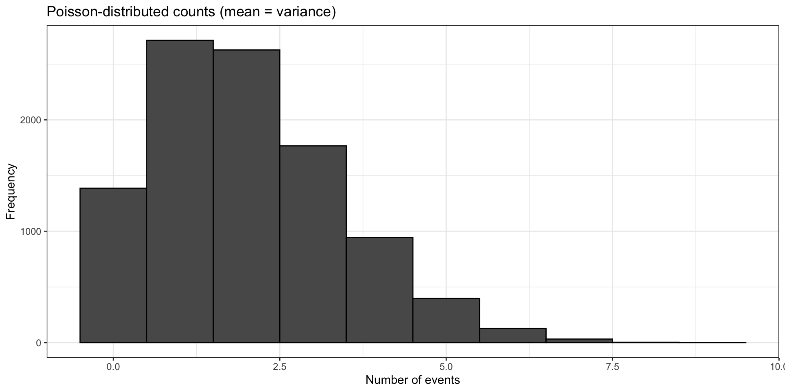
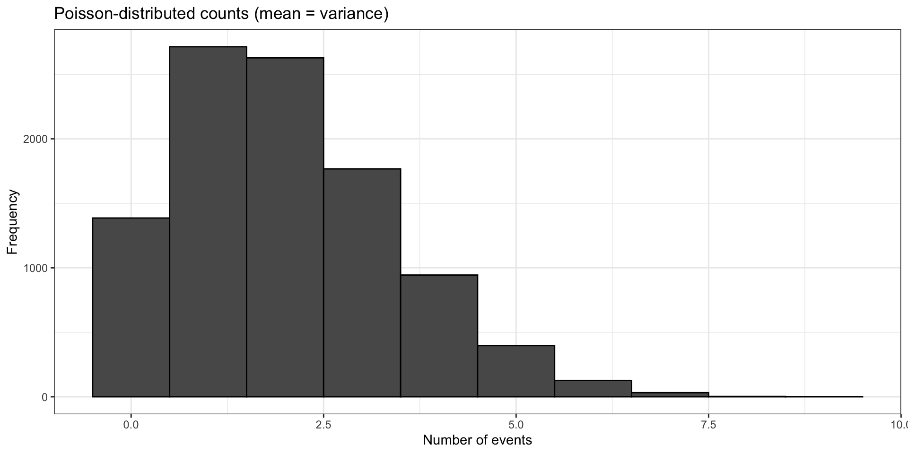
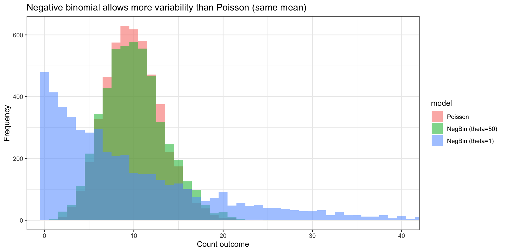

[1] 2.006[1] 2.041368
This lecture extends the regression framework to new outcome types using the same structure as previously discussed regression models
Each model answers a different biomedical question by changing the outcome distribution
Do patients with chronic obstructive pulmonary disease (COPD)
experience more acute exacerbations [sudden worsening of respiratory symptoms] per year as baseline lung function (FEV1) decreases?
\[ Y_i \sim \text{Poisson}(\lambda_i), \quad \log(\lambda_i) = \beta_0 + \beta_1 \text{FEV1}_i + \beta_2 \text{Smoking}_i \]
Poisson likelihood assumes:
\[ Yi∼Poisson(λi) \]
Assumptions for each patient:
[1] 2.006[1] 2.041368
fit_pois <- glm(exacerbations ~ fev1 + smoking,
family = poisson(),
data = dat_pois)
summary(fit_pois)
Call:
glm(formula = exacerbations ~ fev1 + smoking, family = poisson(),
data = dat_pois)
Coefficients:
Estimate Std. Error z value Pr(>|z|)
(Intercept) 2.666410 0.122220 21.817 < 2e-16 ***
fev1 -0.029431 0.001918 -15.344 < 2e-16 ***
smoking 0.341847 0.075789 4.511 6.47e-06 ***
---
Signif. codes: 0 '***' 0.001 '**' 0.01 '*' 0.05 '.' 0.1 ' ' 1
(Dispersion parameter for poisson family taken to be 1)
Null deviance: 550.91 on 249 degrees of freedom
Residual deviance: 252.99 on 247 degrees of freedom
AIC: 905.32
Number of Fisher Scoring iterations: 5modeled the number of acute COPD exacerbations over 12 months as a function of:
Coefficients Table
Coefficients Table Examples:
Intercept : 2.666
Coefficients Table Examples:
FEV1: −0.029
smoking status: 0.342
Statistical Significance:
Among RNA-seq samples, does sequencing depth predict the number of detected low-abundance transcripts?
\[ Y_i \sim \text{NB}(\mu_i, \theta), \quad \log(\mu_i) = \beta_0 + \beta_1 \text{Depth}_i + \beta_2 \text{RIN}_i \]
Negative binomial distribution:
\[ Y_i∼NB(μ_i,θ) \]
# A tibble: 3 × 3
model mean var
<chr> <dbl> <dbl>
1 NegBin (theta=1) 10.0 112.
2 NegBin (theta=50) 10.0 11.9
3 Poisson 9.93 9.80
# A tibble: 6 × 3
depth rin genes_lo_exp
<dbl> <dbl> <dbl>
1 13.7 7.39 113
2 12.2 7.11 21
3 39.9 6.72 65
4 24.5 8.00 156
5 29.8 6.03 22
6 35.7 9.08 10modeled the number of low-expression genes detected in an RNA-seq sample as a function of:
Call:
glm.nb(formula = genes_lo_exp ~ depth + rin, data = dat_nb, init.theta = 1.112880131,
link = log)
Coefficients:
Estimate Std. Error z value Pr(>|z|)
(Intercept) 3.196920 0.451902 7.074 1.50e-12 ***
depth 0.018476 0.004301 4.296 1.74e-05 ***
rin 0.191712 0.052461 3.654 0.000258 ***
---
Signif. codes: 0 '***' 0.001 '**' 0.01 '*' 0.05 '.' 0.1 ' ' 1
(Dispersion parameter for Negative Binomial(1.1129) family taken to be 1)
Null deviance: 304.73 on 239 degrees of freedom
Residual deviance: 273.07 on 237 degrees of freedom
AIC: 3063.4
Number of Fisher Scoring iterations: 1
Theta: 1.1129
Std. Err.: 0.0917
2 x log-likelihood: -3055.3930 Intercept: 3.197 - exp(3.197)≈24.4 - model predicts about 24 low-expression genes detected for a reference sample with: - depth = 0 - RIN = 0
sequencing depth: 0.0185 - exp(0.0185)≈1.019 - each 1-unit increase in sequencing depth is associated with a 1.9% increase in the expected number of detected low-expression genes - essentially, higher sequencing depth leads to greater sensitivity of detecting low-abundance transcripts
RNA integrity number: 0.192 - exp(0.192)≈1.21 - each 1-unit increase in RIN is associated with a 21% increase in the expected number of detected low-expression genes - essentially, higher RMA omtegreity reseves fragile transcripts
Statistical Significance: Both depth and RIN have strong statistical support (p < 0.001)
Dispersion Parameter: - θ≈1.1 - variance is much larger than the mean - model overdispersion - Poisson model would underestimate uncertainty
Among patients with early-stage breast cancer, does higher tumor proliferation predict shorter time to seeing disease manifest in a patient?
Definition(s): - recurrence: first time an event of interest occurs after a defined starting point - first confirmed return of breast cancer after initial curative treatment - Ki-67: tumor proliferation will be defined by presence of Ki-67 a tumor proliferation marker
\[ h(t \mid X_i) = h_0(t) \exp(\beta_1 \text{Ki67}_i + \beta_2 \text{Age}_i) \]
Key parts in context:
Cox model is fit using a partial likelihood:
\[ \text{Likelihood ratio} = \frac{L(\text{full model})}{L(\text{reduced model})} \]
Coefficients are interpreted via hazard ratios:
\[ HR = \exp(\beta) \]
Call:
coxph(formula = Surv(time, status) ~ ki67 + age, data = dat_cox)
n= 220, number of events= 140
coef exp(coef) se(coef) z Pr(>|z|)
ki67 0.05730 1.05897 0.01225 4.676 2.92e-06 ***
age 0.01803 1.01820 0.00682 2.645 0.00818 **
---
Signif. codes: 0 '***' 0.001 '**' 0.01 '*' 0.05 '.' 0.1 ' ' 1
exp(coef) exp(-coef) lower .95 upper .95
ki67 1.059 0.9443 1.034 1.085
age 1.018 0.9821 1.005 1.032
Concordance= 0.607 (se = 0.027 )
Likelihood ratio test= 24.26 on 2 df, p=5e-06
Wald test = 27.16 on 2 df, p=1e-06
Score (logrank) test = 27.39 on 2 df, p=1e-06rows represent covariate-adjusted effect on recurrence risk:
Ki-67 hazard ratio:
Age hazard ratio:
95% Confidence Intervals